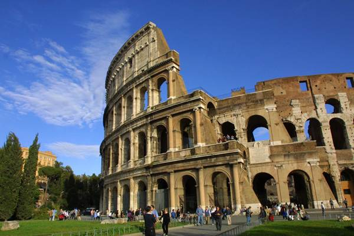
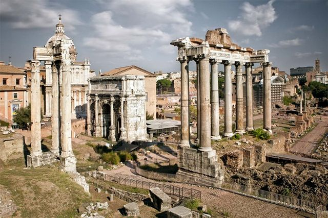
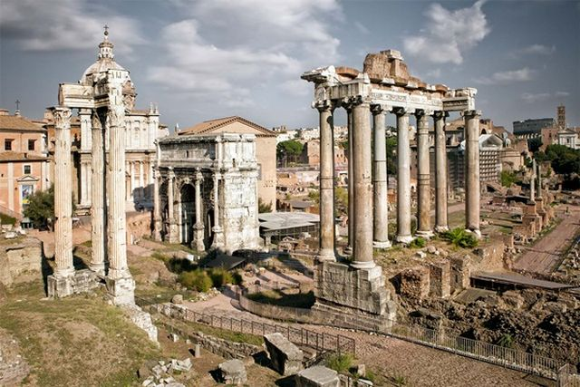

أفضل وقت لزيارة البلد
أبريل إلى يونيو ومن سبتمبر إلى أكتوبر.
أبرز الأماكن السياحية
مدرج كولوسلوم: مدرج روماني اثري يقع في قلب مدينة روما االايطالية ويعتبر من اشهر معالم السياحة في روما وهو احد اكبر الهياكل التي تعود الى الامبراطورية الرومانية، ويعتبر من اقدم واشهر اثار روما

نافورة تريفي او نافورة الامنيات: من اشهر الاماكن السياحية في روما ومن اقدم اثار روما ، بنيت سنة 1762 تتميز بجمال منحوتاتها فبإمكانك ان ترى آلهة البحر نبتون في مركز النافورة على عربة لها شكل الصدفة التي تجرها المخلوقات البحرية، تقع النافورة في مركز مدينة روما ايطاليا
 المنتدى الروماني: هي منطقة اثرية تقع في وسط مدينة روما الايطالية ، تضم آثاراً لمباني رومانية واعمدة وقطع اثرية مختلفة، من اهم الاثار الموجودة في المنتدى الروماني القصر الملكي القديم ومعبد فيستا بالاضافة الى الكوميتيوم المكان الذي كانت تقعد به اجتماعات مجلس الشيوخ في ذلك العصر، يعد المكان من اهم الاماكن السياحية في روما

المنتدى الروماني: هي منطقة اثرية تقع في وسط مدينة روما الايطالية ، تضم آثاراً لمباني رومانية واعمدة وقطع اثرية مختلفة، من اهم الاثار الموجودة في المنتدى الروماني القصر الملكي القديم ومعبد فيستا بالاضافة الى الكوميتيوم المكان الذي كانت تقعد به اجتماعات مجلس الشيوخ في ذلك العصر، يعد المكان من اهم الاماكن السياحية في روما

كيفية الوصول إليها
يمكن الوصول إلى البلد بواسطة الطائرة، السفينة، القطار، أو السيارة اعتمادًا على موقعك الحالي.